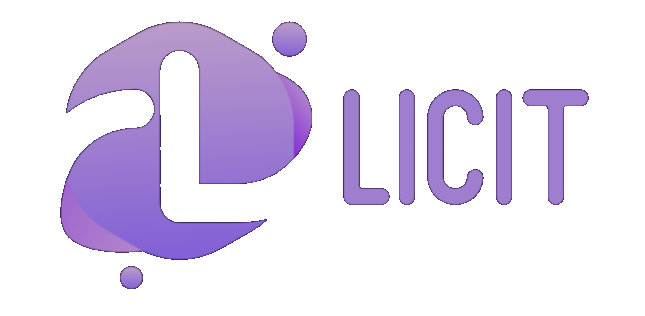

<mat-toolbar class="navbar" style="height: auto">
  

  <span class="spacer"></span>

  <div *ngIf="!isAuthenticated; else userPanel">
    <button color="accent" mat-raised-button [matMenuTriggerFor]="menu">
      Contul tau <mat-icon>person</mat-icon>
    </button>
    <mat-menu #menu="matMenu">
      <button routerLink="/login" mat-menu-item>Intra in cont</button>
      <button routerLink="/register" mat-menu-item>Inregistreaza-te</button>
    </mat-menu>
  </div>

  <app-favorites></app-favorites>

  <button mat-icon-button [matMenuTriggerFor]="settings">
    <mat-icon>settings</mat-icon>
  </button>
  <mat-menu #settings="matMenu">
    <button
      disableRipple
      mat-menu-item
      (click)="$event.stopPropagation()"
      class="theme-toggle"
    >
      <mat-icon style="margin: 0">light_mode</mat-icon>
      <mat-slide-toggle
        (click)="toggleTheme()"
        [(ngModel)]="isDarkTheme"
      ></mat-slide-toggle>
      <mat-icon style="margin: 0">nights_stay</mat-icon>
    </button>
  </mat-menu>
</mat-toolbar>

<ng-template #userPanel>
  <button color="accent" mat-raised-button [matMenuTriggerFor]="userOptions">
    {{ displayName }}
    <mat-icon>person</mat-icon>
  </button>
  <mat-menu #userOptions="matMenu">
    <button mat-menu-item>Setari cont</button>
    <button mat-menu-item>Produsele tale</button>
    <button (click)="logout()" mat-menu-item>Iesi din cont</button>
  </mat-menu>
</ng-template>
